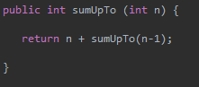

Recursion is a way of coding methods. It consists of breaking a method into smaller and smaller pieces by calling itself in itself. You can think of it like Russian nesting dolls: each time you open one, there’s another, smaller one inside, until it reaches the smallest one possible.
For example, a method to find the sum of all natural numbers up to and including a certain number n can be coded in a recursive way. The function doesn’t know what the sum of all the numbers up to and including n is, but it does know that it is equal to the sum of all the numbers up to and including n-1, plus n. So it returns the value of itself called with n-1, plus the value of n.

Example of a recursive function
Recursive methods can keep calling themselves over and over again to infinity unless they are stopped. This is called a stack overflow. To stop the recursive call, good recursive functions have what’s called a base case. This base case returns a value instead of calling themselves again.
The base case for the method that finds the sum of all the natural numbers would be 1, since it’s the lowest natural number. The sum of all the natural numbers up to and including 1 is 1, so it returns 1.

Example of a recursive function with a base case